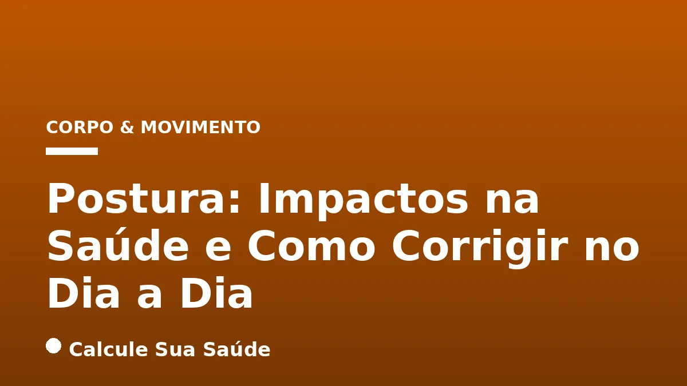

Aviso médico importante
Este conteúdo é educativo e informativo e não substitui a consulta, o diagnóstico ou o tratamento de um profissional de saúde. Em caso de sintomas, procure orientação médica.
Índice do Artigo
- 1. O Que é Postura? Conceitos Essenciais para a Saúde
- 2. Causas e Fatores de Risco para a Má Postura
- 3. Sintomas e Consequências da Má Postura para a Saúde
- 4. Diagnóstico da Má Postura e Desvios da Coluna
- 5. A Ciência por Trás da Postura e da Dor
- 6. Prevenção e Correção da Má Postura no Dia a Dia
- 7. Ergonomia no Ambiente de Trabalho e Estudo
- 8. Postura Correta em Atividades Diárias
- 9. Tratamentos e Abordagens Terapêuticas
- 10. Mitos Comuns Sobre a Postura vs. O Que a Ciência Diz
- 11. Dados Epidemiológicos: A Má Postura no Brasil e no Mundo
- 12. Impactos da Postura na Saúde Mental e Bem-Estar
- 13. O Papel da Atividade Física no Fortalecimento Postural
- 14. A Importância da Conscientização e Educação Postural
- 15. Considerações Finais: Postura como Parte de um Estilo de Vida Saudável
- 16. Perguntas frequentes
A postura, a maneira como posicionamos nosso corpo em diversas atividades diárias, é um pilar fundamental para a saúde e o bem-estar. Longe de ser apenas uma questão estética, a forma como nos sentamos, andamos, trabalhamos ou dormimos exerce uma influência profunda sobre a integridade de nossa coluna vertebral, a eficiência muscular e até mesmo a funcionalidade de órgãos internos. Manter uma postura adequada é um desafio constante na vida moderna, marcada por longas horas em frente a telas e um estilo de vida predominantemente sedentário.
Neste artigo aprofundado, exploraremos a definição de postura correta e inadequada, as múltiplas causas e fatores de risco que levam a desvios posturais, os sintomas frequentemente negligenciados e as ferramentas diagnósticas disponíveis. Mais importante, apresentaremos estratégias baseadas em evidências científicas para prevenir e corrigir a má postura no dia a dia, desmistificando crenças populares e focando em abordagens que realmente promovem a saúde musculoesquelética.
Compreender a dinâmica da postura e adotar hábitos conscientes não se trata de buscar uma perfeição estática inatingível, mas sim de cultivar um corpo resiliente, capaz de variar posições e se mover com conforto e eficiência. Acompanhe-nos nesta jornada para desvendar os segredos de uma boa postura e seus impactos transformadores na sua saúde.
Em resumo
- A postura correta alinha ossos e articulações, otimizando o uso muscular e minimizando o esforço, enquanto a má postura causa desalinhamento e tensão.
- Fatores como sedentarismo, excesso de peso, uso prolongado de telas e ergonomia inadequada são causas comuns de má postura.
- Sintomas variam de dores localizadas e fadiga a problemas respiratórios, digestivos e de saúde mental em casos crônicos.
- O diagnóstico envolve avaliação clínica e exames como radiografia e ressonância magnética para identificar desvios e danos.
- A correção postural foca em movimento, variação de posições, fortalecimento muscular (core) e ergonomia, com fisioterapia e atividades como Pilates sendo eficazes.
- A ciência desmistifica a "postura ideal" estática, enfatizando a importância da variação de movimentos e da preparação física para prevenir dores.
1. O Que é Postura? Conceitos Essenciais para a Saúde
A postura é a maneira como o corpo se posiciona no espaço, seja em repouso ou em movimento. Ela reflete o alinhamento de ossos, músculos e articulações, e é fundamental para a funcionalidade biomecânica do organismo. Compreender os conceitos de postura correta e inadequada é o primeiro passo para cultivar hábitos mais saudáveis e prevenir uma série de problemas de saúde.
Postura Correta: Alinhamento e Eficiência
A postura correta é definida como a posição em que o corpo e a coluna vertebral são mantidos eretos contra a gravidade, respeitando as curvas fisiológicas naturais: a lordose cervical (curva para dentro no pescoço), a cifose torácica (curva para fora na parte superior das costas) e a lordose lombar (curva para dentro na região inferior das costas). Nesse alinhamento ideal, ossos e articulações trabalham em harmonia, permitindo que os músculos sejam utilizados de forma eficiente, com o mínimo de esforço e tensão. Isso significa que o peso corporal é distribuído de maneira equilibrada, reduzindo o estresse sobre as estruturas da coluna e prevenindo o desgaste prematuro de cartilagens e discos intervertebrais.
Má Postura: Desalinhamento e Sobrecarga
Por outro lado, a má postura, ou postura inadequada, ocorre quando há um desalinhamento dessas estruturas ósseas e articulares. Esse desalinhamento, muitas vezes sutil no início, aumenta a tensão nos músculos, ligamentos e articulações, levando a um esforço compensatório do corpo. Com o tempo, essa sobrecarga pode resultar em fadiga muscular crônica, dor e, em casos mais graves, no desenvolvimento ou agravamento de condições como lordose excessiva, cifose acentuada (corcunda) e escoliose (curvatura lateral da coluna). A má postura não afeta apenas a estética, mas compromete a funcionalidade do corpo, impactando desde a capacidade respiratória até a digestão e a circulação sanguínea.
2. Causas e Fatores de Risco para a Má Postura
A má postura é um problema multifatorial, resultado de uma complexa interação entre o estilo de vida, hábitos diários e, em alguns casos, condições de saúde preexistentes. Identificar as causas é crucial para a prevenção e correção eficazes.
Hábitos e Estilo de Vida
- Posicionamentos Incorretos no Dia a Dia: A maneira como nos sentamos em casa ou no trabalho, a forma como nos curvamos para usar o celular (a famosa “síndrome do pescoço de texto”) ou as posturas adotadas em tarefas domésticas cotidianas contribuem significativamente para desalinhamentos.
- Sedentarismo: A falta de atividade física regular enfraquece a musculatura que sustenta a coluna vertebral, especialmente os músculos do core (abdômen e lombar). Sem um suporte muscular adequado, a coluna torna-se mais vulnerável a desvios e à fadiga postural. Para entender a importância do movimento, veja nosso artigo sobre Alongamento e Mobilidade: Benefícios e Prática Segura.
- Excesso de Peso e Sobrecarga Física: Tanto o peso corporal elevado quanto o carregamento frequente de objetos pesados (como mochilas ou bolsas) aumentam a carga sobre a coluna vertebral e as articulações, favorecendo o desalinhamento e o desgaste.
- Permanência Prolongada na Mesma Posição: Ficar sentado ou em pé por longos períodos sem pausas para movimentação é extremamente prejudicial. O corpo humano é feito para o movimento, e a estase prolongada sobrecarrega estruturas específicas.
- Uso Excessivo de Telas: A inclinação constante da cabeça para olhar celulares e computadores é uma causa crescente de dores e tensões na região cervical, especialmente entre jovens.
- Tabagismo: Estudos indicam que fumantes são mais propensos a dores nas costas, o que pode estar relacionado a doenças degenerativas do disco e das articulações, impactando a saúde postural.
Ambiente e Condições de Saúde
- Ergonomia Inadequada: Ambientes de trabalho que não são adaptados às necessidades do indivíduo, com cadeiras, mesas e monitores em alturas incorretas, forçam o corpo a adotar posturas prejudiciais.
- Doenças e Condições Clínicas: Algumas condições de saúde podem causar ou agravar a má postura. Isso inclui hérnia de disco, cifose, espondilólise, escoliose, osteoporose, fraturas vertebrais e certas doenças neurológicas. Para mais informações sobre dores na coluna, consulte nosso artigo sobre Dor Lombar: Causas, Sinais de Alerta e Alívio Baseado em Evidências.
3. Sintomas e Consequências da Má Postura para a Saúde
Os impactos da má postura vão muito além de um simples desconforto estético. Os sintomas podem ser variados, desde dores localizadas até problemas sistêmicos que afetam a qualidade de vida de forma significativa.
Sinais de Alerta e Dores Comuns
Os primeiros sinais de má postura frequentemente surgem antes que a dor se torne intensa e crônica. É crucial estar atento a eles:
- Dores nas Costas, Pescoço e Ombros: Frequentemente descritas como uma dor persistente ou que piora ao final do dia, são os sintomas mais comuns.
- Fadiga Muscular e Tensão: Os músculos trabalham em excesso para compensar o desalinhamento, levando a uma sensação constante de cansaço e rigidez.
- Contraturas Musculares: São pontos rígidos e dolorosos nos músculos, muitas vezes chamados de “nós”, que se formam devido à tensão crônica.
- Rigidez Matinal: Sensação de peso e dificuldade nos primeiros movimentos do dia, que pode melhorar com a movimentação.
- Dores de Cabeça Tensionais: A tensão crônica no pescoço e ombros pode irradiar para a cabeça, causando cefaleias persistentes.
- Desconforto e Limitação de Movimento: A capacidade de realizar movimentos amplos e fluidos pode ser comprometida.
Complicações Crônicas e Sistêmicas
Quando a má postura persiste por longos períodos, as consequências podem se tornar mais graves e afetar diversos sistemas do corpo:
- Problemas na Coluna: Aumenta o risco de hérnias de disco, desalinhamentos vertebrais e osteoartrite (desgaste das articulações), como a Artrose (Osteoartrite).
- Problemas Respiratórios: Uma postura curvada pode comprimir o diafragma e os pulmões, dificultando a respiração profunda e eficiente.
- Problemas Digestivos: A compressão abdominal pode levar a inchaço, azia e dificuldades na digestão.
- Problemas Circulatórios: A má postura pode afetar o fluxo sanguíneo, contribuindo para inchaço nas pernas e, em casos raros, aumento da pressão arterial.
- Incontinência Urinária: Em algumas situações, o desalinhamento pélvico pode influenciar a função da bexiga.
- Impactos na Saúde Mental: A dor crônica e a percepção de uma imagem corporal alterada podem gerar sentimentos de insegurança, baixa autoestima e até mesmo contribuir para quadros de Ansiedade.
A tabela a seguir resume os principais sintomas e suas possíveis causas relacionadas à má postura:
| Sintoma | Possível Causa Relacionada à Má Postura |
|---|---|
| Dores nas costas, pescoço, ombros | Tensão muscular, desalinhamento vertebral, sobrecarga articular |
| Fadiga muscular e rigidez | Esforço compensatório dos músculos, estase prolongada |
| Dores de cabeça tensionais | Tensão cervical e muscular irradiada |
| Limitação de movimento | Rigidez articular, contraturas musculares |
| Formigamento ou dormência | Compressão nervosa (em casos avançados) |
| Problemas respiratórios | Compressão torácica, restrição diafragmática |
| Problemas digestivos (azia, inchaço) | Compressão abdominal, alteração da função visceral |
| Baixa autoestima, insegurança | Impacto estético e dor crônica |
4. Diagnóstico da Má Postura e Desvios da Coluna
O diagnóstico preciso da má postura e de seus desdobramentos é fundamental para a elaboração de um plano de tratamento eficaz. Ele geralmente envolve uma combinação de avaliação clínica detalhada e exames complementares.
Avaliação Clínica e Histórico do Paciente
O processo diagnóstico começa no consultório médico, onde o profissional (ortopedista, fisiatra ou fisioterapeuta) realizará uma avaliação minuciosa. Esta inclui:
- Histórico de Vida: O médico questionará sobre os hábitos diários do paciente, tipo de trabalho, prática de atividades físicas, histórico de dores, lesões prévias e quaisquer condições de saúde existentes.
- Exame Físico Postural: O paciente será observado em diferentes posições (em pé, sentado, andando) para identificar assimetrias, desalinhamentos visíveis, curvaturas anormais da coluna (como cifose, lordose e escoliose) e a presença de gibosidades (saliências ósseas). Testes clínicos específicos, como a flexão anterior do tronco, podem ser realizados para avaliar a mobilidade da coluna e identificar desvios.
- Palpação: A palpação dos músculos e articulações pode revelar pontos de tensão, contraturas e sensibilidade.
Exames Complementares
Em casos de dor persistente, suspeita de alterações estruturais ou para um planejamento terapêutico mais detalhado, exames de imagem podem ser solicitados:
- Radiografia (Raio-X): É o exame mais comum para avaliar a estrutura óssea da coluna vertebral. Permite identificar desalinhamentos, curvaturas anormais, desgaste articular e outras alterações ósseas. As radiografias podem ser realizadas em diferentes projeções (frente, perfil) e, por vezes, com o paciente em movimento para avaliar a dinâmica da coluna.
- Ressonância Magnética (RM) e Tomografia Computadorizada (TC): Esses exames oferecem imagens mais detalhadas dos tecidos moles, como discos intervertebrais, ligamentos, nervos e medula espinhal. São essenciais para investigar hérnias de disco, compressões nervosas, inflamações e outras patologias que não são visíveis na radiografia.
- Baropodometria: Este exame analisa a distribuição do peso sobre os pés durante a marcha e a postura estática. Ele pode identificar desequilíbrios na pisada e na distribuição de carga, que podem estar relacionados a problemas posturais ascendentes.
A combinação dessas abordagens diagnósticas permite ao profissional de saúde ter uma visão completa da condição postural do paciente, possibilitando um plano de tratamento personalizado e baseado em evidências.
5. A Ciência por Trás da Postura e da Dor
A relação entre postura inadequada e dor tem sido objeto de diversas pesquisas científicas. Embora a compreensão popular muitas vezes simplifique essa relação, a ciência oferece uma perspectiva mais nuançada e baseada em evidências.
Evidências da Conexão Postura-Dor
Estudos têm demonstrado uma correlação significativa entre certas alterações posturais e a incidência de dor. Uma revisão sistemática com metanálise, publicada na *Current Reviews in Musculoskeletal Medicine* (PubMed, 2020), concluiu que adultos com dor cervical frequentemente apresentam maior projeção da cabeça para frente. Essa alteração postural, conhecida como "pescoço de texto" ou "cabeça para frente", mostrou uma correlação significativa com a intensidade da dor e o grau de incapacidade funcional na região cervical. Isso sugere que, embora a postura não seja o único fator, ela desempenha um papel importante no desenvolvimento e na manutenção da dor em certas regiões.
Outras pesquisas também reforçam essa conexão. Estudos associam a má postura à dor nas costas em mulheres idosas, indicando que o desalinhamento pode aumentar o estresse mecânico sobre as estruturas da coluna, contribuindo para o desconforto. A incidência de hérnia de disco lombar, por exemplo, também tem sido ligada a hábitos posturais inadequados e à sobrecarga crônica da coluna, especialmente em atividades que envolvem flexão e rotação repetitivas do tronco.
A Importância do Movimento e da Variação
É crucial notar que a ciência moderna tem desmistificado a ideia de uma "postura ideal" estática e universal. Em vez de focar em manter uma única posição "perfeita" o tempo todo, a evidência sugere que o corpo se beneficia muito mais do movimento e da variação de posições. Permanecer em qualquer posição, mesmo que considerada "correta", por longos períodos, pode levar à fadiga e à sobrecarga de certas estruturas. O corpo humano é adaptado para o movimento, e a capacidade de alternar entre diferentes posturas e de se movimentar regularmente é mais protetora contra a dor do que a busca por um alinhamento estático.
"Estudos científicos são claros: não há uma relação direta entre as posições que se adota ao longo do dia e as dores. O corpo se beneficia mais do movimento e da variação de posições do que de um alinhamento estático 'correto'. As dores são, na maioria dos casos, consequência da falta de preparação física." - Fisioterapia Avançada em Paço de Arcos, Oeiras.
Portanto, a ciência nos orienta a buscar uma postura dinâmica, que priorize a flexibilidade, o fortalecimento muscular e a capacidade de variar as posições ao longo do dia, em vez de uma rigidez postural que pode, paradoxalmente, aumentar o risco de dor.
6. Prevenção e Correção da Má Postura no Dia a Dia
A correção da postura não é apenas uma questão de estética, mas uma medida direta de prevenção de dor e perda de função. Pequenas mudanças de hábito podem fazer uma diferença real na qualidade de vida. A chave é a conscientização e a incorporação de práticas saudáveis na rotina.
Princípios Gerais de Prevenção
- Conscientização Postural: O primeiro passo é desenvolver a consciência sobre a própria postura. Preste atenção em como você se senta, fica em pé e se movimenta ao longo do dia.
- Movimento e Variação: Evite permanecer na mesma posição por mais de 30 minutos. Faça pausas regulares para se levantar, caminhar um pouco e alongar. O corpo se beneficia mais do movimento e da variação de posições do que de um alinhamento estático prolongado.
- Fortalecimento Muscular e Alongamentos: A prática regular de exercícios que fortalecem os músculos das costas, abdômen (core) e pescoço é essencial. O core forte proporciona estabilidade à coluna. Alongamentos regulares ajudam a diminuir a fadiga, manter uma boa flexibilidade e aliviar tensões. Atividades como Alongamento e Mobilidade são cruciais.
7. Ergonomia no Ambiente de Trabalho e Estudo
Passamos grande parte do dia sentados em frente a computadores ou estudando. A ergonomia do ambiente é vital para prevenir a má postura e suas consequências.
Dicas para uma Postura Ergonômica
- Cadeira e Assento: Sente-se com as costas retas e os ombros para trás, garantindo que os glúteos toquem a parte posterior da cadeira. Use uma cadeira com bom suporte lombar.
- Pés Apoiados: Mantenha os pés apoiados no chão. Se necessário, utilize um descanso para os pés para que seus quadris e joelhos fiquem flexionados em um ângulo reto (90 graus). Evite cruzar as pernas, pois isso pode desalinhar a pelve.
- Altura do Monitor: O monitor do computador deve estar na linha de visão, de modo que a parte superior da tela esteja ao nível dos seus olhos. Isso evita que você incline a cabeça para cima ou para baixo.
- Cotovelos e Punhos: Mantenha os cotovelos flexionados em um ângulo de 90 graus e apoiados na altura da mesa, de forma que seus punhos fiquem retos ao digitar. Isso evita forçar a coluna cervical e sobrecarregar tendões.
- Ajuste da Cadeira e Mesa: Ajuste a altura da cadeira e da mesa para que se adequem às suas medidas, permitindo que você mantenha as orientações acima.
- Pausas Ativas: A cada 30-60 minutos, levante-se, caminhe, alongue-se e faça pequenos exercícios para ativar a circulação e relaxar a musculatura.
A seguir, uma tabela com um checklist rápido para a sua estação de trabalho:
| Item | Verificação Ergonômica |
|---|---|
| Cadeira | Suporte lombar adequado, altura ajustada, glúteos no fundo |
| Pés | Apoiados no chão ou em descanso, joelhos a 90 graus |
| Monitor | Topo na linha dos olhos, distância de um braço |
| Teclado e Mouse | Próximos ao corpo, punhos retos, cotovelos a 90 graus |
| Postura | Costas retas, ombros relaxados, cabeça alinhada |
| Pausas | Regulares (a cada 30-60 minutos) para movimentação |
8. Postura Correta em Atividades Diárias
A atenção à postura não se restringe ao ambiente de trabalho. Ela deve ser estendida a todas as atividades do dia a dia, desde caminhar até dormir.
Caminhar com Consciência
- Distribuição do Peso: Ao caminhar, distribua o peso do corpo igualmente entre as pernas.
- Pés e Abdômen: Mantenha os pés voltados para frente, o abdômen levemente contraído (ativando o core) e a cabeça ereta, visualizando o horizonte. Evite olhar para baixo constantemente. A Caminhada é uma excelente atividade para a saúde geral.
- Ombros e Braços: Mantenha os ombros relaxados e os braços balançando naturalmente ao lado do corpo.
Postura ao Dormir
Embora a ciência desmistifique a ideia de que a posição de dormir afeta a postura de forma determinante a longo prazo, um bom alinhamento durante o sono é crucial para o conforto e para evitar dores ao acordar.
- Travesseiros Adequados: Utilize travesseiros que mantenham o alinhamento da coluna cervical com o restante da coluna. Para quem dorme de lado, o travesseiro deve preencher o espaço entre a cabeça e o ombro. Para quem dorme de costas, um travesseiro mais baixo pode ser ideal.
- Posição Lateral: Dormir de lado com um travesseiro entre os joelhos pode ajudar a manter o alinhamento da coluna lombar e pélvica.
- Posição Dorsal (de Barriga para Cima): Um pequeno travesseiro sob os joelhos pode reduzir a pressão na região lombar.
- Evitar Dormir de Bruços: Esta posição força a rotação da cabeça e pode sobrecarregar o pescoço e a coluna.
Outros Hábitos Diários
- Uso do Telefone: Evite segurar o telefone com o pescoço entre o ombro e a orelha. Use fones de ouvido ou o viva-voz.
- Calçados: Prefira sapatos confortáveis e que ofereçam bom suporte. O uso prolongado de sapatos muito altos ou desconfortáveis pode alterar a marcha e a postura.
- Redução do Tempo de Tela: Especialmente para jovens, reduzir o tempo gasto em celulares e computadores é crucial para prevenir a "síndrome do pescoço de texto" e outros problemas posturais.
9. Tratamentos e Abordagens Terapêuticas
A boa notícia é que a maioria dos casos de má postura apresenta excelente evolução com tratamentos conservadores. A intervenção precoce e um plano terapêutico individualizado são fundamentais para o sucesso.
Fisioterapia e Reeducação Postural
A fisioterapia é a base do tratamento para a má postura. Um fisioterapeuta qualificado pode:
- Avaliar e Diagnosticar: Realizar uma avaliação detalhada para identificar os desvios posturais específicos, fraquezas musculares e padrões de movimento inadequados.
- Fortalecimento Muscular Direcionado: Desenvolver um programa de exercícios para fortalecer os músculos que sustentam a coluna, como os do core (abdômen e lombar), glúteos e paravertebrais.
- Alongamentos Terapêuticos: Aplicar técnicas de alongamento para restaurar a flexibilidade de músculos encurtados e aliviar a tensão.
- Reeducação Postural Global (RPG): Uma técnica que visa reequilibrar as cadeias musculares do corpo, tratando o indivíduo de forma global e buscando a causa dos problemas posturais, não apenas os sintomas.
- Ginástica Laboral: Programas de exercícios e alongamentos realizados no ambiente de trabalho, que podem ser preventivos e corretivos.
Atividades Físicas Complementares
Certos tipos de atividades físicas são particularmente benéficos para a melhora da postura e o fortalecimento do tronco:
- Pilates: Foca no fortalecimento do core, na melhora da flexibilidade, no controle da respiração e na consciência corporal, sendo altamente eficaz para a reeducação postural.
- Natação: É um exercício de baixo impacto que fortalece a musculatura das costas e do tronco de forma equilibrada, sem sobrecarregar as articulações.
- Yoga: Combina posturas (asanas), exercícios de respiração e meditação, promovendo flexibilidade, força, equilíbrio e consciência corporal.
Acompanhamento Médico Especializado
Em caso de dores persistentes, desconfortos que não melhoram com as abordagens conservadoras ou suspeita de alterações estruturais mais graves, é crucial procurar um médico ortopedista ou fisiatra. Esses especialistas podem:
- Identificar Alterações Estruturais: Diagnosticar condições como hérnias de disco, escoliose grave, osteoartrite ou outras patologias que podem exigir intervenções mais específicas.
- Orientar o Tratamento Adequado: Prescrever medicamentos para alívio da dor e inflamação, indicar terapias complementares ou, em casos raros e graves, considerar opções cirúrgicas.
A abordagem multidisciplinar, envolvendo médicos e fisioterapeutas, é frequentemente a mais eficaz para gerenciar e corrigir problemas posturais.
10. Mitos Comuns Sobre a Postura vs. O Que a Ciência Diz
A compreensão da postura é frequentemente obscurecida por mitos populares que, embora bem-intencionados, podem levar a abordagens ineficazes ou até prejudiciais. A ciência tem avançado para desmistificar essas crenças, oferecendo uma perspectiva mais realista e funcional.
Mito 1: "As posturas tortas são a causa das suas dores."
- O que a ciência diz: Estudos científicos são claros: não há uma relação direta e exclusiva entre as posições que se adota ao longo do dia e o surgimento de dores. A dor é um fenômeno complexo e multifatorial. Na maioria dos casos, as dores não são uma consequência direta de uma "postura torta", mas sim da falta de preparação física do corpo, da permanência prolongada em uma única posição (seja ela "certa" ou "errada") e da incapacidade de variar os movimentos. O corpo humano é resiliente e adaptável, e a dor geralmente surge quando há uma sobrecarga ou falta de capacidade de adaptação.
Mito 2: "Boa postura é estar sempre direito."
- O que a ciência diz: Tentar manter-se excessivamente "direito" ou rígido pode, na verdade, causar mais dores e tensão do que estar ligeiramente desalinhado. A ideia de "boa postura" muitas vezes está mais ligada a uma imagem estética e à autoestima do que à prevenção real da dor. A melhor postura é a próxima postura, ou seja, a capacidade de variar as posições. O corpo se beneficia do movimento constante e da alternância entre diferentes alinhamentos, permitindo que diferentes grupos musculares trabalhem e descansem, evitando a sobrecarga de estruturas específicas.
Mito 3: "A posição em que dorme afeta sua postura de forma determinante."
- O que a ciência diz: Não há evidências claras de que a posição de dormir afete a postura de forma determinante a longo prazo. Embora uma posição desconfortável possa causar rigidez ou dor ao acordar, não há dados robustos que comprovem que ela altere permanentemente a estrutura da coluna. No entanto, o uso de travesseiros e colchões adequados é recomendado para garantir conforto, um bom alinhamento da coluna durante o sono e, consequentemente, uma melhor qualidade de descanso, que indiretamente contribui para a saúde postural.
Mito 4: "Existe uma postura ideal universal."
- O que a ciência diz: Não há um padrão universal para a postura que se aplique a todos os indivíduos. Cada corpo é único, com suas próprias características anatômicas, histórico de vida e padrões de movimento. Existem orientações gerais para um alinhamento saudável, mas o foco deve ser em um bom desempenho de cada atividade de maneira confortável e com economia de energia, priorizando a flexibilidade e a variação de posições. A "melhor postura" é aquela que permite ao indivíduo realizar suas tarefas diárias sem dor, com eficiência e com a capacidade de se adaptar a diferentes demandas.
Em resumo, a ciência nos convida a abandonar a busca por uma postura estática e "perfeita" e a abraçar a dinâmica do movimento, o fortalecimento muscular e a variação como as verdadeiras chaves para uma coluna saudável e livre de dores.
11. Dados Epidemiológicos: A Má Postura no Brasil e no Mundo
Os problemas relacionados à postura e à dor na coluna são uma preocupação global de saúde pública, com dados alarmantes que ressaltam a urgência de medidas preventivas e corretivas.
Prevalência Global e no Brasil
- Dor Lombar Global: A Organização Mundial da Saúde (OMS) estima que cerca de 80% da população mundial terá ou já teve algum tipo de dor lombar ao longo da vida. Os maus hábitos posturais são apontados como um dos principais fatores de risco, tornando a dor lombar a segunda causa mais comum de dor, superada apenas pela dor de cabeça.
- Dor Crônica na Coluna no Brasil: No Brasil, a Pesquisa Nacional de Saúde (PNS) de 2019, realizada pelo IBGE, revelou que 21,6% dos adultos relataram dor crônica na coluna (DCC). Isso representa milhões de brasileiros convivendo com esse tipo de desconforto.
Fatores Associados à Dor Crônica na Coluna no Brasil
A PNS 2019 também identificou diversos fatores associados à maior prevalência de dor crônica na coluna:
- Gênero e Idade: A prevalência de DCC é maior em mulheres (odds ratio - OR=1,27) e aumenta significativamente com a idade, sendo mais frequente a partir dos 25-34 anos.
- Tabagismo: Fumantes (OR=1,24) e ex-fumantes (OR=1,30) apresentam maior chance de desenvolver DCC.
- Atividade Física Doméstica Pesada: Pessoas que realizam atividade física doméstica pesada têm um OR de 1,41 para DCC.
- Condições de Saúde: Obesidade (OR=1,12), hipertensão (OR=1,21) e colesterol aumentado (OR=1,53) são fatores de risco associados. Isso reforça a importância de um estilo de vida saudável, incluindo o controle de Colesterol e Triglicerídeos.
- Autoavaliação de Saúde: Indivíduos com autoavaliação de saúde ruim ou muito ruim também apresentam maior chance de DCC.
- Escolaridade: Curiosamente, a prevalência de DCC é menor em adultos com maior nível de escolaridade, sugerindo uma possível relação com maior acesso à informação sobre saúde e melhores condições de trabalho.
O Alerta para Jovens no Brasil
Dados do DataSUS indicam uma tendência preocupante: um aumento significativo nos problemas de coluna em jovens no Brasil. Nos últimos cinco anos, os atendimentos hospitalares de jovens de até 19 anos por problemas na coluna cresceram 37,5%, e os atendimentos ambulatoriais aumentaram 27% nessa mesma faixa etária. Esse aumento está diretamente relacionado a:
- Longos períodos em frente ao computador.
- Uso excessivo de celular.
- Hábitos posturais inadequados, especialmente em atividades de lazer e estudo.
Esses dados reforçam a necessidade de intervenções educativas e preventivas desde a infância e adolescência, visando a promoção de hábitos posturais saudáveis e um estilo de vida mais ativo.
12. Impactos da Postura na Saúde Mental e Bem-Estar
Embora a conexão entre postura e saúde física seja amplamente reconhecida, seus impactos na saúde mental e no bem-estar geral são frequentemente subestimados. A forma como nos portamos fisicamente pode influenciar nossos estados emocionais e a percepção que temos de nós mesmos.
Postura e Autoestima
Uma postura curvada ou retraída pode, ao longo do tempo, contribuir para sentimentos de insegurança e baixa autoestima. A linguagem corporal é uma via de mão dupla: assim como nossas emoções afetam nossa postura, nossa postura pode influenciar nossas emoções. Adotar uma postura mais ereta e aberta, mesmo que inicialmente forçada, pode enviar sinais ao cérebro que promovem uma sensação de maior confiança e assertividade.
Dor Crônica e Saúde Mental
A dor crônica, que é uma consequência comum da má postura, tem um impacto devastador na saúde mental. Viver com dor constante pode levar a:
- Estresse e Ansiedade: A preocupação com a dor, a limitação de atividades e a incerteza sobre o futuro podem elevar os níveis de estresse e Ansiedade.
- Depressão: A incapacidade de participar de atividades prazerosas, a interrupção do sono e o isolamento social frequentemente associados à dor crônica são fatores de risco significativos para a depressão.
- Fadiga Mental: O esforço contínuo para lidar com a dor consome energia mental, levando à fadiga e à diminuição da concentração.
Postura e Percepção Social
Nossa postura também influencia como somos percebidos pelos outros. Uma postura ereta e confiante pode transmitir uma imagem de competência e segurança, enquanto uma postura curvada pode ser interpretada como desânimo ou falta de confiança. Essa percepção social, por sua vez, pode afetar nossas interações e oportunidades, retroalimentando o ciclo de bem-estar ou mal-estar.
Portanto, cuidar da postura é também um ato de autocuidado que reverbera positivamente na saúde mental, promovendo uma maior sensação de controle, confiança e bem-estar geral.
13. O Papel da Atividade Física no Fortalecimento Postural
A atividade física regular é um dos pilares mais importantes na prevenção e correção da má postura. Ela não apenas fortalece os músculos essenciais, mas também melhora a flexibilidade, o equilíbrio e a consciência corporal.
Fortalecimento do Core
O "core" é o centro de força do corpo, composto pelos músculos abdominais profundos, músculos da região lombar, assoalho pélvico e diafragma. Um core forte é fundamental para estabilizar a coluna vertebral e manter uma postura adequada. Exercícios como pranchas, ponte e variações de abdominais que focam na estabilização são altamente recomendados.
Músculos das Costas e Ombros
Músculos fortes nas costas (como os eretores da espinha e o grande dorsal) e nos ombros (como os romboides e trapézios) são cruciais para manter a coluna ereta e os ombros para trás, prevenindo a cifose torácica e a projeção da cabeça para frente. Exercícios de remada, puxadas e elevações laterais são exemplos eficazes.
Flexibilidade e Mobilidade
Além do fortalecimento, a flexibilidade é vital. Músculos encurtados, especialmente nos isquiotibiais (parte posterior da coxa), flexores do quadril e peitorais, podem puxar a coluna para fora do alinhamento. Alongamentos regulares para essas regiões, bem como exercícios de mobilidade para a coluna torácica e cervical, ajudam a restaurar a amplitude de movimento e a reduzir a tensão. Atividades como yoga e Pilates são excelentes para combinar força e flexibilidade.
Equilíbrio e Propriocepção
A atividade física também melhora o equilíbrio e a propriocepção (a capacidade do corpo de perceber sua posição no espaço). Isso é fundamental para manter a estabilidade postural em diferentes situações, como caminhar em superfícies irregulares ou realizar movimentos complexos.
A escolha da atividade física deve ser individualizada e, idealmente, orientada por um profissional de educação física ou fisioterapeuta, especialmente para quem já apresenta dores ou desvios posturais. A consistência é a chave para colher os benefícios a longo prazo.
14. A Importância da Conscientização e Educação Postural
A conscientização e a educação postural são os primeiros e mais contínuos passos para a prevenção e correção de problemas relacionados à postura. Não basta saber "o que" fazer, mas entender "por que" e "como" integrar esses conhecimentos no dia a dia.
Desenvolvendo a Consciência Corporal
Muitas pessoas vivem sem prestar atenção à sua postura até que a dor se manifeste. Desenvolver a consciência corporal significa aprender a sentir o próprio corpo, identificar tensões, desalinhamentos e padrões de movimento. Isso pode ser feito através de:
- Auto-observação: Regularmente, faça uma pausa e observe sua postura ao sentar, em pé, ao caminhar. Pergunte-se: Meus ombros estão relaxados? Minha cabeça está alinhada? Meus pés estão bem apoiados?
- Espelhos: Use espelhos para observar seu alinhamento de diferentes ângulos.
- Feedback de Profissionais: Fisioterapeutas e educadores físicos podem oferecer feedback valioso e exercícios específicos para melhorar a percepção corporal.
Educação Sobre os Riscos e Benefícios
Compreender os riscos da má postura (dores, problemas respiratórios, digestivos, etc.) e os benefícios da postura adequada (redução da dor, maior energia, melhor respiração, confiança) é um poderoso motivador para a mudança de hábitos. Informações baseadas em evidências, como as apresentadas neste artigo, são cruciais para desmistificar crenças e orientar ações eficazes.
Integração no Cotidiano
A educação postural não deve ser um evento isolado, mas um processo contínuo de integração de novos hábitos. Isso inclui:
- Lembretes Visuais: Colocar lembretes no ambiente de trabalho ou em casa para verificar a postura.
- Pausas Ativas: Incorporar pequenas pausas para alongar e movimentar-se a cada hora.
- Escolhas Conscientes: Optar por calçados confortáveis, mochilas que distribuam o peso adequadamente e mobiliário ergonômico sempre que possível.
A educação postural capacita o indivíduo a ser um agente ativo na sua própria saúde, promovendo um estilo de vida mais consciente e prevenindo problemas antes que se tornem crônicos.
15. Considerações Finais: Postura como Parte de um Estilo de Vida Saudável
A postura é muito mais do que a simples forma como nos apresentamos ao mundo; ela é um reflexo do nosso bem-estar físico e mental e um componente integral de um estilo de vida saudável. Ao longo deste artigo, exploramos a complexidade da postura, desde suas definições e causas até seus impactos multifacetados na saúde e as estratégias baseadas em evidências para sua correção e prevenção.
É fundamental reiterar que a ciência moderna nos convida a abandonar a busca por uma "postura ideal" estática e inatingível. Em vez disso, a ênfase recai sobre a importância do movimento, da variação de posições e do fortalecimento muscular como os verdadeiros pilares de uma coluna saudável e um corpo resiliente. A capacidade de se adaptar, de se mover livremente e de alternar entre diferentes posturas é o que realmente protege contra a dor e o desgaste.
A má postura, impulsionada por hábitos sedentários, uso excessivo de telas e ergonomia inadequada, é uma epidemia silenciosa que afeta milhões de pessoas, desde jovens a idosos, com consequências que vão da dor crônica a problemas sistêmicos e de saúde mental. No entanto, a boa notícia é que a maioria desses problemas pode ser prevenida e tratada com sucesso através de abordagens conservadoras, como a fisioterapia, o Pilates e a natação, aliadas a uma conscientização postural contínua.
Cuidar da postura é um investimento na sua qualidade de vida a longo prazo. Ao integrar pequenas mudanças no seu dia a dia – desde ajustar a ergonomia do seu espaço de trabalho até incorporar pausas ativas e exercícios de fortalecimento – você estará construindo um corpo mais forte, flexível e livre de dores. Lembre-se, este conteúdo é educativo e não substitui a avaliação de um profissional de saúde. Em caso de dores persistentes ou preocupações, procure sempre um médico ou fisioterapeuta para um diagnóstico e plano de tratamento individualizado.
16. Perguntas frequentes
O que é considerado uma postura correta?
A postura correta é aquela em que a coluna vertebral mantém suas curvas fisiológicas naturais (cervical, torácica e lombar) alinhadas contra a gravidade, permitindo que ossos e articulações funcionem com eficiência e mínimo esforço muscular. Não é uma posição rígida, mas um alinhamento equilibrado.
Quais são os principais impactos da má postura na saúde?
A má postura pode causar dores crônicas nas costas, pescoço e ombros, fadiga muscular, dores de cabeça tensionais, e em casos graves, levar a hérnias de disco, problemas respiratórios, digestivos e até impactar a saúde mental, como baixa autoestima e ansiedade.
O uso excessivo de celular realmente afeta a postura?
Sim, o uso excessivo de celular, com a cabeça inclinada para baixo por longos períodos, pode levar à "síndrome do pescoço de texto", causando tensão, dor na região cervical e, a longo prazo, contribuindo para desalinhamentos e desgaste na coluna.
Qual a melhor forma de corrigir a postura no ambiente de trabalho?
No trabalho, ajuste a cadeira para que os pés fiquem apoiados no chão e os joelhos a 90 graus. O monitor deve estar na linha dos olhos, e os cotovelos apoiados na mesa em 90 graus. Faça pausas frequentes para se levantar e alongar, evitando permanecer na mesma posição por mais de 30 minutos.
Exercícios como Pilates e natação realmente ajudam a melhorar a postura?
Sim, Pilates e natação são atividades altamente recomendadas. O Pilates foca no fortalecimento do core, flexibilidade e consciência corporal, enquanto a natação fortalece a musculatura das costas e do tronco de forma equilibrada e com baixo impacto, ambos contribuindo significativamente para a melhora postural.
Existe uma "postura ideal" universal que todos deveriam seguir?
Não, a ciência desmistifica a ideia de uma postura ideal universal e estática. O corpo se beneficia mais do movimento e da variação de posições do que de um alinhamento rígido. A melhor postura é a próxima, ou seja, a capacidade de alternar entre diferentes posições de forma confortável e eficiente.
Quando devo procurar um médico para problemas de postura?
É crucial procurar um médico ortopedista ou fisiatra se você sentir dores persistentes, desconfortos que não melhoram com mudanças de hábitos, ou se notar deformidades visíveis na coluna. Um profissional poderá diagnosticar alterações estruturais e orientar o tratamento adequado.
A má postura pode afetar a respiração?
Sim, uma postura curvada, especialmente a cifose torácica acentuada, pode comprimir o diafragma e os pulmões, dificultando a expansão completa da caixa torácica e, consequentemente, a respiração profunda e eficiente. Isso pode levar a uma respiração mais superficial e menos oxigenação.
Leia também
Referências e Fontes
1. InfoEscola. Postura Correta. Disponível em: infoescola.com
2. Fisioterapia Avançada em Paço de Arcos, Oeiras. Os 3 Maiores Mitos sobre a sua Postura. Disponível em: vertexaisearch.cloud.google.com
3. GNDI. As principais lesões causadas pela má postura. Disponível em: gndi.com.br
4. Dr. Luciano Pellegrino - Médico Ortopedista de Coluna. Qual a postura correta?. Disponível em: drlucianopellegrino.com.br
5. Dr. Flávio Zelada. Malefícios causados pela má postura corporal. Publicado em 18 de março de 2025. Disponível em: drflaviozelada.com.br
6. TecMundo. O mito da postura ideal | Ciencia. Publicado em 17 de maio de 2025. Disponível em: tecmundo.com.br
7. Rede D'Or São Luiz. Má postura e suas complicações: atenção redobrada enquanto o corpo não está em movimento. Disponível em: rededorsaoluiz.com.br
8. Doutor Hérnia. Dor na coluna em jovens cresce no Brasil e acende alerta sobre postura e uso excessivo de telas. Disponível em: doutorhernia.com.br